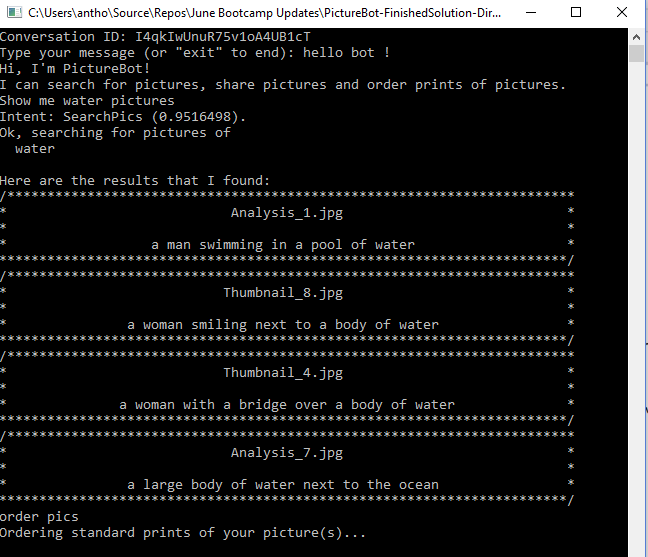
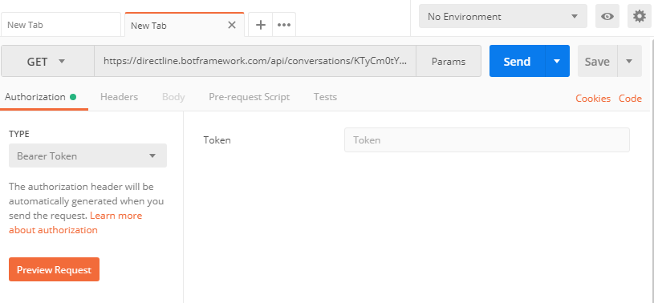
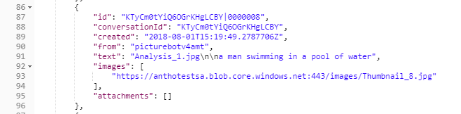

在某些情况下，可能需要直接与机器人通信。例如，你可能希望使用托管机器人执行功能测试。可以使用 Direct Line API 来执行机器人与你自己的客户端应用程序之间的通信。
此外，有时你可能希望使用其他通道或进一步自定义机器人。在这种情况下，你可以使用 Direct Line 与自定义机器人进行通信。
Microsoft Bot Framework Direct Line 机器人是可以使用自己设计的自定义客户端运行的机器人。Direct Line 机器人类似于普通机器人。它们只是不需要使用提供的通道。可以按你的期望编写 Direct Line 客户端。你可以编写 Android 客户端、iOS 客户端，甚至是基于控制台的客户端应用程序。
此动手实验引入了与 Direct Line API 相关的主要概念。
本实验假定你已在实验 3 中生成并发布了机器人。建议执行该实验，这样才能成功完成其后续实验。如果没有执行该实验，可以仔细阅读所有练习，并根据需要查看一些代码或者将代码用于自己的应用程序中。
我们还假设你已完成了实验 4，不过，即使你未完成记录实验，也能完成本实验。
在前几个试验课程中，我们已收集各种密钥。如果将初学者项目作为起点，则将需要其中的大多数密钥。
密钥
- 认知服务 API URL：
- 认知服务 API 密钥：
- LUIS API 终结点：
- LUIS API 密钥：
- LUIS API 应用 ID：
- 机器人应用名称：
- 机器人应用 ID：
- 机器人应用密码：
- Azure 存储连接字符串：
- Cosmos DB URL：
- Cosmos DB 密钥：
- DirectLine 密钥：
请确保使用所有必要值更新 “appsettings.json” 文件。
打开 “PictureBot” 解决方案
右键单击项目并选择 “发布”。
在发布对话框中，选择 “选择现有”，然后选择 “发布”
如果出现提示，请使用在实验中使用的帐户登录
选择一直在使用的订阅
展开资源组，然后选择我们在实验 3 中创建的 Picture Bot 应用服务
选择 “确定”
注：根据进入此实验时采用的路径，在进行以下测试时可能需要第二次发布，以获取 Echo Bot 服务。 重新发布机器人，仅在这次更改发布设置以删除现有文件。
在门户中，找到已发布的 PictureBot Web 应用机器人，并导航到 “通道” 选项卡。
选择“Direct Line”图标（看起来像地球仪）。你将看到显示 “默认网站”。
在 “机密密钥” 处选择 “显示”，并将其中某个密钥存储在记事本中或者记录密钥的任何位置。
你可以阅读有关启用 Direct Line 通道以及机密和令牌的详细说明。
我们将创建一个控制台应用程序，帮助我们了解如何使用 Direct Line 直接连接到机器人。我们将创建的控制台客户端应用程序会在两个会话中运行。主会话接受用户输入并将消息发送给机器人。辅助会话每秒轮询一次机器人以检索来自机器人的任何消息，然后显示收到的消息。
注：已按文档中的最佳做法修改了此处的说明和代码。
如果尚未打开，请在 Visual Studio 中打开 “PictureBot” 解决方案
在解决方案资源管理器中右键单击解决方案，然后选择 “添加”>“新项目”。
搜索 “控制台应用 (.NET Core)”，选择它并选择 “下一步”
在名称处输入 “PictureBotDL”
选择 “创建”。
右键单击 PictureBotDL 项目并选择 “管理 NuGet 包”。
在 “浏览” 选项卡中，搜索并安装/更新以下内容：
打开 “Program.cs”
将 “Program.cs” （位于 PictureBotDL 中）的内容替换为以下内容：
using System;
using System.Diagnostics;
using System.Linq;
using System.Threading.Tasks;
using Microsoft.Bot.Connector.DirectLine;
using Newtonsoft.Json;
using Activity = Microsoft.Bot.Connector.DirectLine.Activity;
namespace PictureBotDL
{
class Program
{
// ************
// Replace the following values with your Direct Line secret and the name of your bot resource ID.
//*************
private static string directLineSecret = "YourDLSecret";
private static string botId = "YourBotServiceName";
// This gives a name to the bot user.
private static string fromUser = "PictureBotSampleUser";
static void Main(string[] args)
{
StartBotConversation().Wait();
}
/// <summary>
/// Drives the user's conversation with the bot.
/// </summary>
/// <returns></returns>
private static async Task StartBotConversation()
{
// Create a new Direct Line client.
DirectLineClient client = new DirectLineClient(directLineSecret);
// Start the conversation.
var conversation = await client.Conversations.StartConversationAsync();
// Start the bot message reader in a separate thread.
new System.Threading.Thread(async () => await ReadBotMessagesAsync(client, conversation.ConversationId)).Start();
// Prompt the user to start talking to the bot.
Console.Write("Conversation ID: " + conversation.ConversationId + Environment.NewLine);
Console.Write("Type your message (or \"exit\" to end): ");
// Loop until the user chooses to exit this loop.
while (true)
{
// Accept the input from the user.
string input = Console.ReadLine().Trim();
// Check to see if the user wants to exit.
if (input.ToLower() == "exit")
{
// Exit the app if the user requests it.
break;
}
else
{
if (input.Length > 0)
{
// Create a message activity with the text the user entered.
Activity userMessage = new Activity
{
From = new ChannelAccount(fromUser),
Text = input,
Type = ActivityTypes.Message
};
// Send the message activity to the bot.
await client.Conversations.PostActivityAsync(conversation.ConversationId, userMessage);
}
}
}
}
/// <summary>
/// Polls the bot continuously and retrieves messages sent by the bot to the client.
/// </summary>
/// <param name="client">The Direct Line client.</param>
/// <param name="conversationId">The conversation ID.</param>
/// <returns></returns>
private static async Task ReadBotMessagesAsync(DirectLineClient client, string conversationId)
{
string watermark = null;
// Poll the bot for replies once per second.
while (true)
{
// Retrieve the activity set from the bot.
var activitySet = await client.Conversations.GetActivitiesAsync(conversationId, watermark);
watermark = activitySet?.Watermark;
// Extract the activies sent from our bot.
var activities = from x in activitySet.Activities
where x.From.Id == botId
select x;
// Analyze each activity in the activity set.
foreach (Activity activity in activities)
{
// Display the text of the activity.
Console.WriteLine(activity.Text);
// Are there any attachments?
if (activity.Attachments != null)
{
// Extract each attachment from the activity.
foreach (Attachment attachment in activity.Attachments)
{
switch (attachment.ContentType)
{
// Display a hero card.
case "application/vnd.microsoft.card.hero":
RenderHeroCard(attachment);
break;
// Display the image in a browser.
case "image/png":
Console.WriteLine($"Opening the requested image '{attachment.ContentUrl}'");
Process.Start(attachment.ContentUrl);
break;
}
}
}
}
// Wait for one second before polling the bot again.
await Task.Delay(TimeSpan.FromSeconds(1)).ConfigureAwait(false);
}
}
/// <summary>
/// Displays the hero card on the console.
/// </summary>
/// <param name="attachment">The attachment that contains the hero card.</param>
private static void RenderHeroCard(Attachment attachment)
{
const int Width = 70;
// Function to center a string between asterisks.
Func<string, string> contentLine = (content) => string.Format($"0}", string.Format("{0," + ((Width + content.Length) / 2).ToString() + "}", content));
// Extract the hero card data.
var heroCard = JsonConvert.DeserializeObject<HeroCard>(attachment.Content.ToString());
// Display the hero card.
if (heroCard != null)
{
Console.WriteLine("/{0}", new string('*', Width + 1));
Console.WriteLine("*{0}*", contentLine(heroCard.Title));
Console.WriteLine("*{0}*", new string(' ', Width));
Console.WriteLine("*{0}*", contentLine(heroCard.Text));
Console.WriteLine("{0}/", new string('*', Width + 1));
}
}
}
}
注：此代码根据文档稍作了修改，以便包含我们在接下来的实验部分中将使用的一些内容。
在 “Program.cs” 中，使用自己的特定值更新 Direct Line 机密和机器人 ID。
花些时间查看这段示例代码。这对确保了解如何连接 PictureBot 并获得响应非常有益。
右键单击 “PictureBotDL” 项目并选择 “设置为启动项目”。
接着按 F5以运行应用。
使用命令行应用程序与机器人进行对话

注：如果没有得到回应，则机器人可能出错。使用 Bot Emulator 在本地测试机器人，修复所有问题，然后再次发布。
急智测验 - 如何显示对话 ID？我们将在后面的部分中了解需要这样做的原因。
我们拥有对话 ID，所以可以使用 HTTP Get 检索用户和机器人的消息。如果熟练 Rest 客户端且经验丰富，请随意使用自己偏好的工具。
在本实验中，我们将演练如何使用 Postman（基于 Web 的客户端）来检索消息。
使用 Direct Line API，客户端可以通过发出 HTTP Post 请求向机器人发送消息。还可以通过 WebSocket 流或发出 HTTP GET 请求来接收来自机器人的消息。在本实验中，我们将了解如何使用 HTTP Get 选项接收消息。
我们发出 GET 请求。还需要确保标头包含标头名称（授权）和标头值（持有者 YourDirectLineSecret）。另外，我们将通过在请求中将 {conversationId} 替换为当前对话 ID，调用控制台应用中的现有对话：https://directline.botframework.com/api/conversations/{conversationId}/messages。
使用 Postman，配置相当轻松：

打开 “Postman”
请务必在类型处选择 “GET”
在 URL 处输入 “https://directline.botframework.com/api/conversations/{conversationId}/messages” 请务必将其中的 converstationId 替换为你的特定对话 ID
选择 “授权”，在类型处选择 “持有者令牌”
将值设置为 “{你的 Direct Line 机密}”
最后，选择 “发送”。
检查结果。
新建与控制台应用的对话，务必搜索图片。
使用新的对话 ID 通过 Postman 创建新请求。
检查返回的响应。 应该能看到图像 URL 显示在响应的图像数组中。

有额外的时间吗？能否从终端利用 curl（下载链接：https://curl.haxx.se/download.html） 来检索对话（就像对 Postman 执行的操作那样）？
提示：命令可能类似于
curl -H "Authorization:Bearer {SecretKey}" https://directline.botframework.com/api/conversations/{conversationId}/messages -XGET